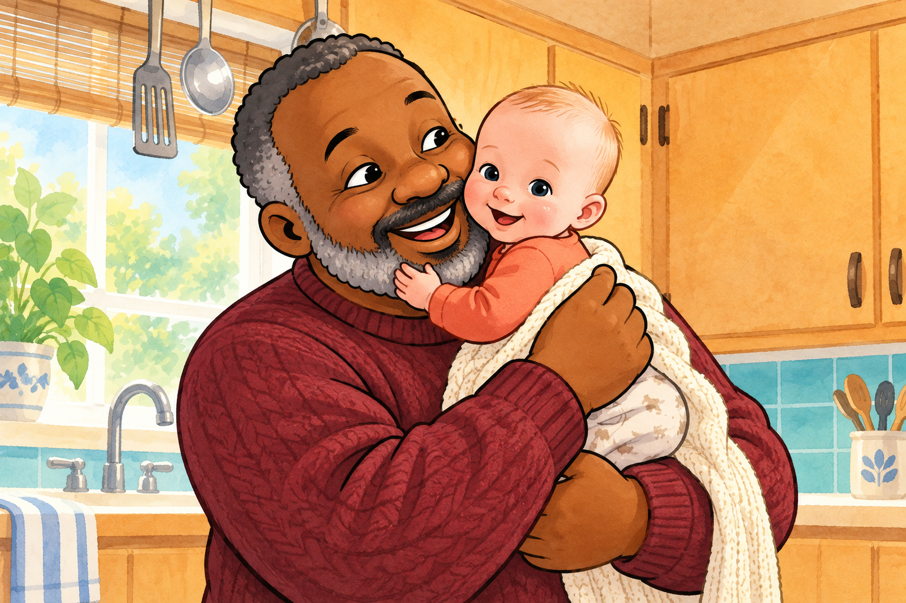
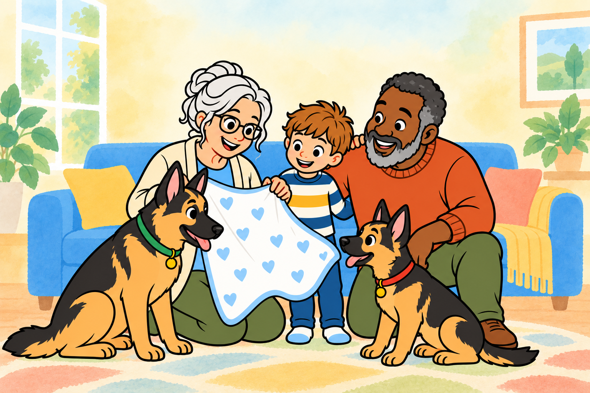
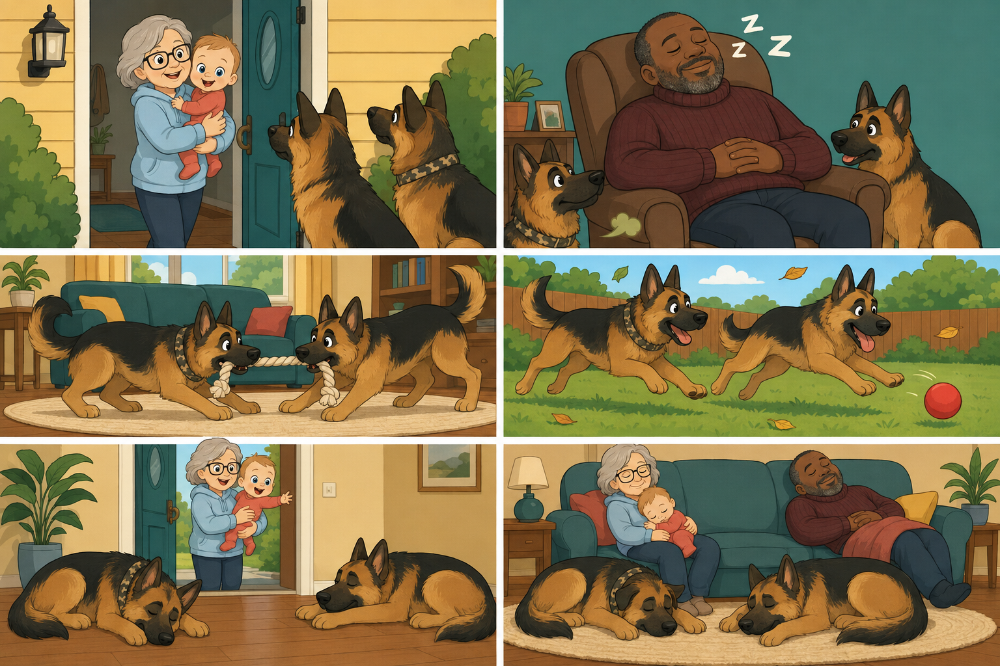
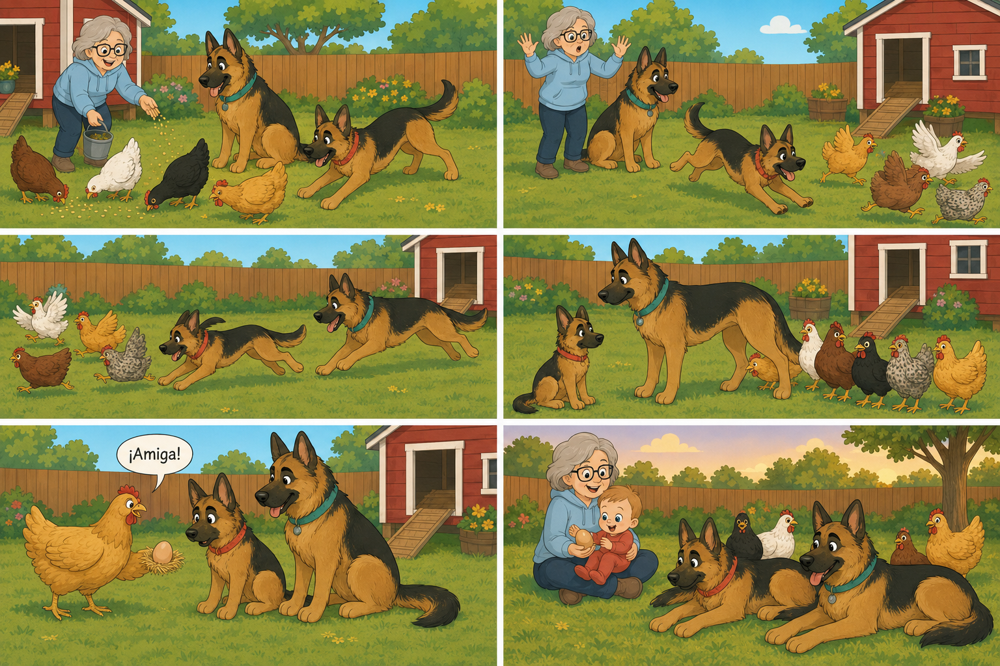
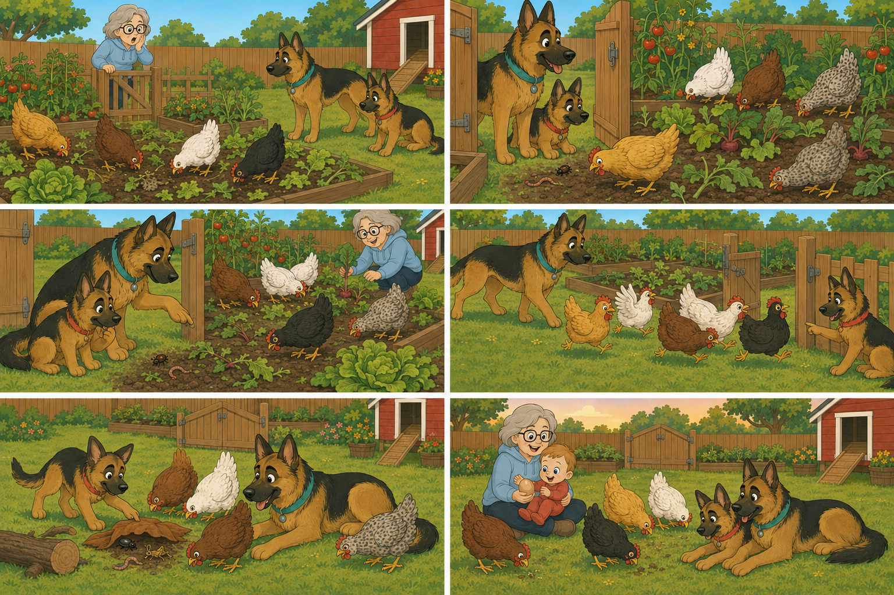
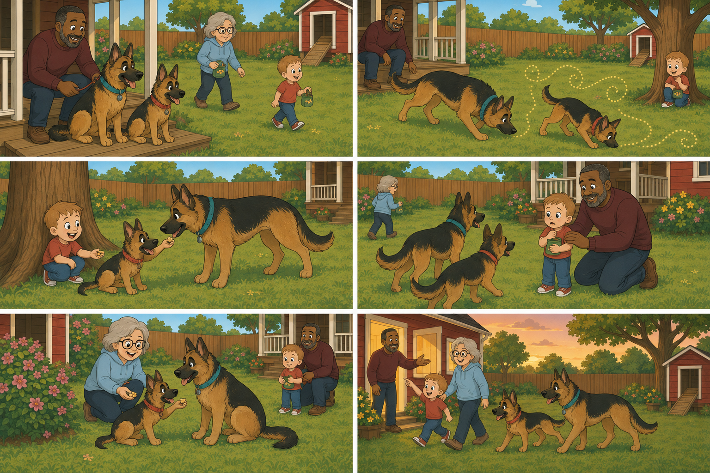
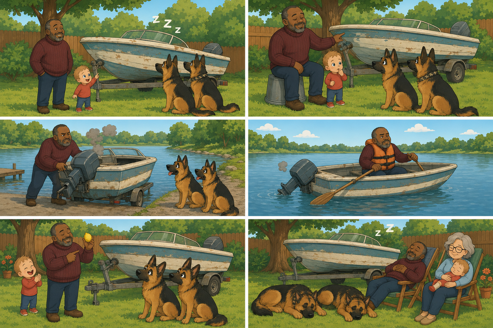
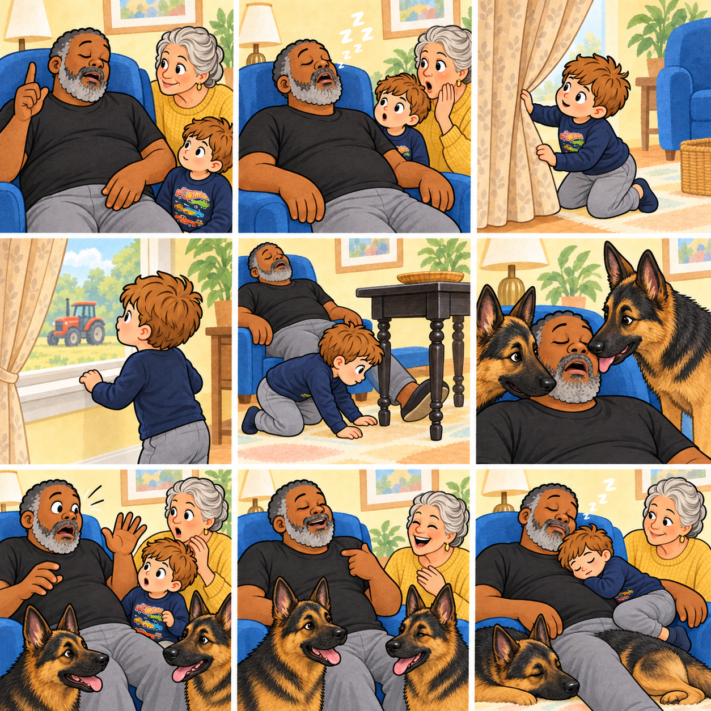
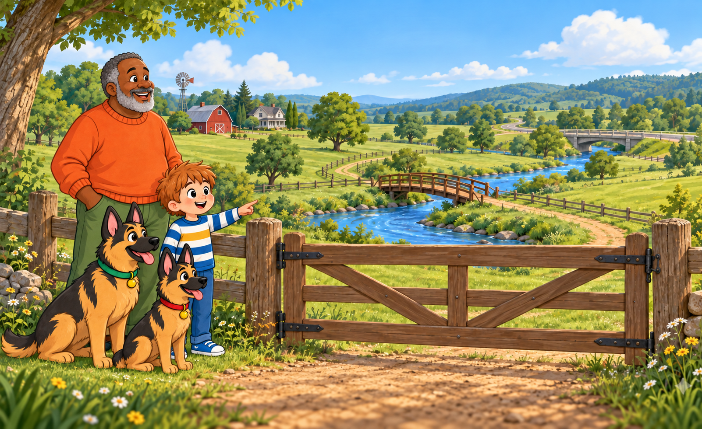

Grumpy Finds a Baby
Ten tiny fingers, ten tiny toes, and the day Arlo found his Grumpy.
Read this storyStories made with love
Come along with Arlo, Ruby, Riley, Gaga, and Grumpy for big-hearted adventures close to home.
9 books to read

Ten tiny fingers, ten tiny toes, and the day Arlo found his Grumpy.
Read this story
Making space for baby and learning that love grows bigger.
Read this story
Missing someone, making your own fun, and one very sleepy family.
Read this story
Listening, friendship, and one very special Spanish word.
Read this story
Hungry hens, helpful dogs, and bugs in the right place.
Read this story
Finding family and knowing exactly where you belong.
Read this story
A boat that was much better at resting than boating.
Read this story
Mysterious noises, a curious boy, and one Grumpy who absolutely does not snore.
Read this story
Sometimes a gate is more than wood and chain.
Read this story